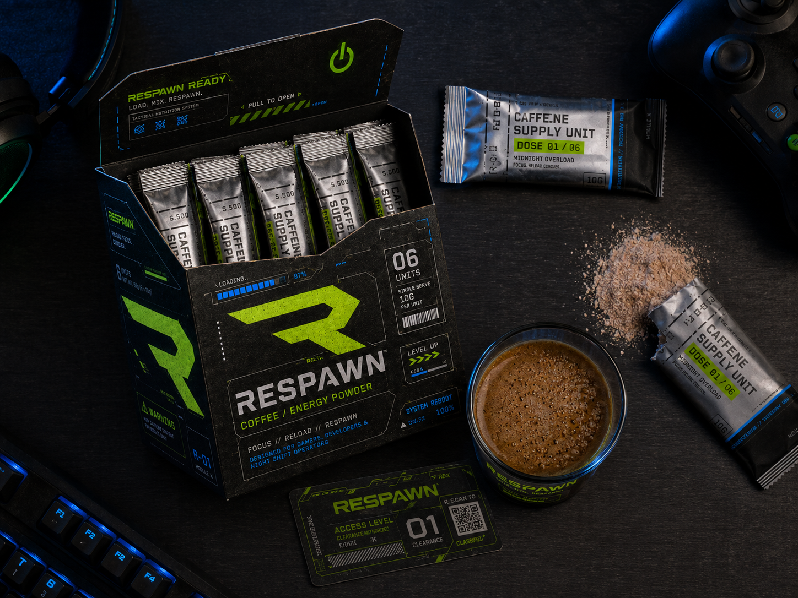

⚡
硬核回血
拒绝软绵绵的伪概念，用最直接、高效的物理能量与极具张力的视觉刺激，帮助用户瞬间打破深夜的生理极限。
RESPAWN SYSTEM // MIDNIGHT MODE
RESPAWN 是为深夜赶稿、敲代码、组排上分的人准备的功能性咖啡补给系统。当注意力掉线、灵感卡顿、身体进入低电量状态时，一包补给，就是一次重启。
ACTIVATE RESPAWN
深夜高强度用脑群体：熬夜修图的设计师、疯狂敲代码的程序员、深夜组排上分的硬核玩家。
作为一名经常在深夜疯狂赶稿与组排开黑的设计系学生，我深知熬夜党在凌晨三点最需要的不是佛系治愈，而是能让人瞬间满血复活的“强效回血”。
创立RESPAWN 就是为了像游戏里的“重生地”一样，用硬核的机能视觉与高能产品，让所有深夜高强度用脑的硬核玩家一秒回血、重回战场。
拒绝软绵绵的伪概念，用最直接、高效的物理能量与极具张力的视觉刺激，帮助用户瞬间打破深夜的生理极限。
每一个闪烁的屏幕、每一个赶稿的凌晨，都是我们的主场。我们不歌颂熬夜，但我们致敬并陪伴每一个在黑夜里战斗、死磕到底的灵魂。
将游戏中的“复活机制”引入现实生活。无论灵感多枯竭、精力多卡顿，只要核心不灭，喝下这杯，你就能原地重返战场。
拒绝为了高级而高级的无意义过度包装。每一处易撕的材质、防油防水的涂层、利落的几何切角，都是为了极端高压场景下的高效使用而生。让视觉服务于功能，让设计回归最硬核的“机能主义”。
我们不想再做一款温和、治愈、慢节奏的咖啡。RESPAWN 面向的是凌晨仍在赶稿的设计师、持续敲代码的程序员、深夜组排上分的玩家，以及所有在高压状态下继续战斗的人。
它不是一杯普通咖啡。它更像一份战术补给，一次能量注入，一次从低电量到重新上线的状态切换。
撕开它，冲下它，重启自己。
No Game Over in Midnight.
COLOR SYSTEM / FLOWING MENU